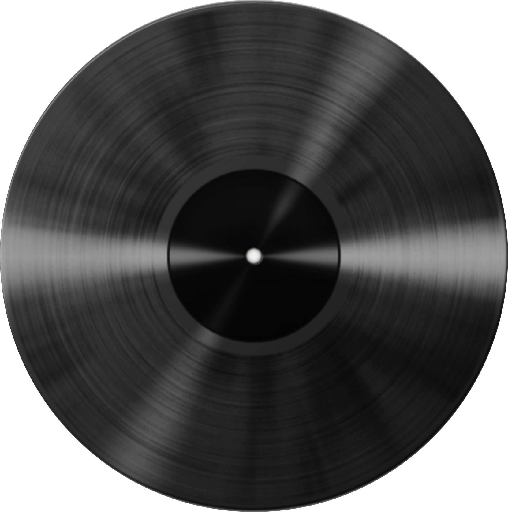

WHAT U VIBIN TO? /// AMSTERDAM /// TOKYO /// STRICTLY VINYL /// DIG DEEP /// PLAY IT LOUD /// WHAT U VIBIN TO? /// AMSTERDAM /// TOKYO /// STRICTLY VINYL ///
About
Books
Contact
Dig for new music
Events
